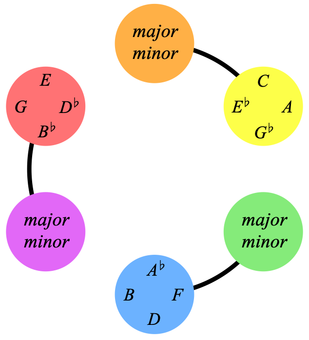

WELCOME TO
This simple colour wheel explains harmony
and unlocks an expansive world of compositional ideas
The colours unlock the use of any chord in a key
And 100's of unique key changes
The Cook Book is where we explore writing ideas with metaharmony
Here's an example from 'exploring the subdominants':

The colours of metaharmony take physical shape
Showing all the relationships and symetries in detail
The first step of metaharmony is learning the colours,
But you might want to start with cook book for inspiration